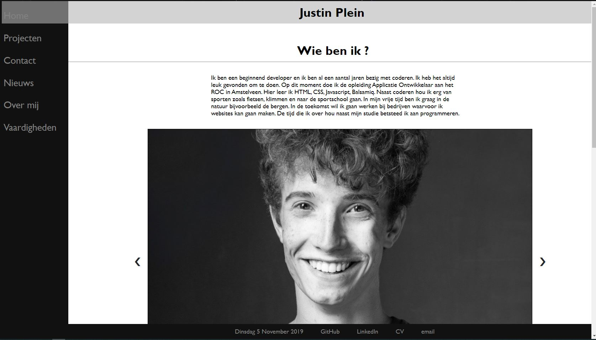
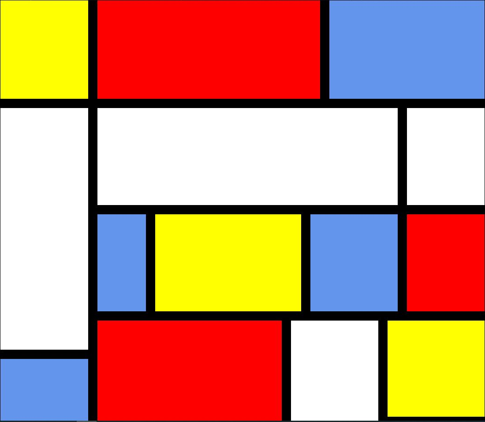
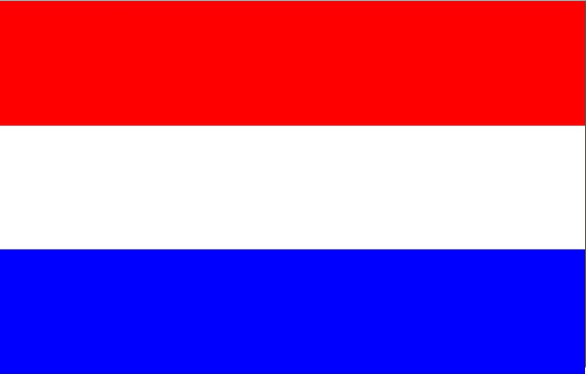

Justin Plein
Gemaakte projecten
Portfolio website
Bij dit project moesten we zelf een portfolio website maken. Daar heb ik veel geleerd en het was leuk om te doen!

Mondriaan namaken
Bij dit project moesten we zelf een Mondriaan schilderij namaken in de vorm van een website. Daar heb ik veel geleerd en het was leuk om te doen !

De Nerderlandsevlag na maken
Bij dit project moest ik zelf de Nederlandse Vlag na bouwen in de vorm van website.
